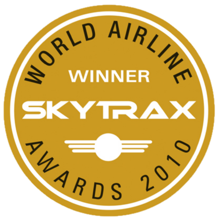
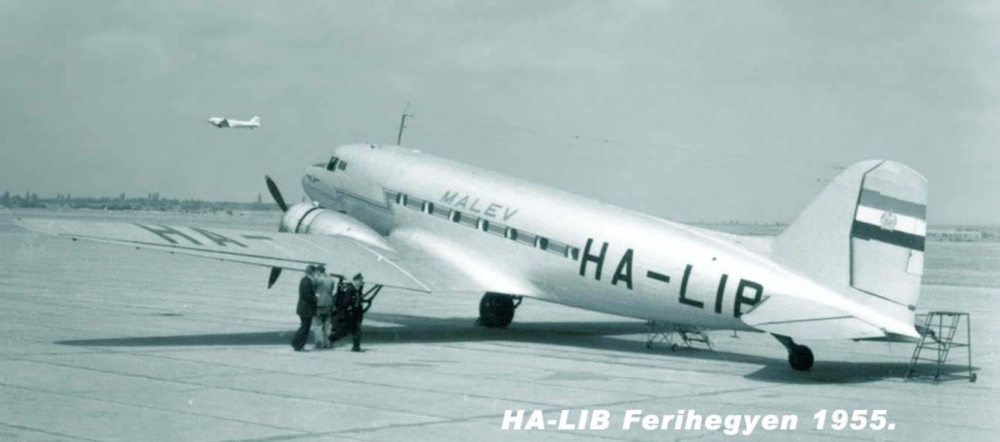
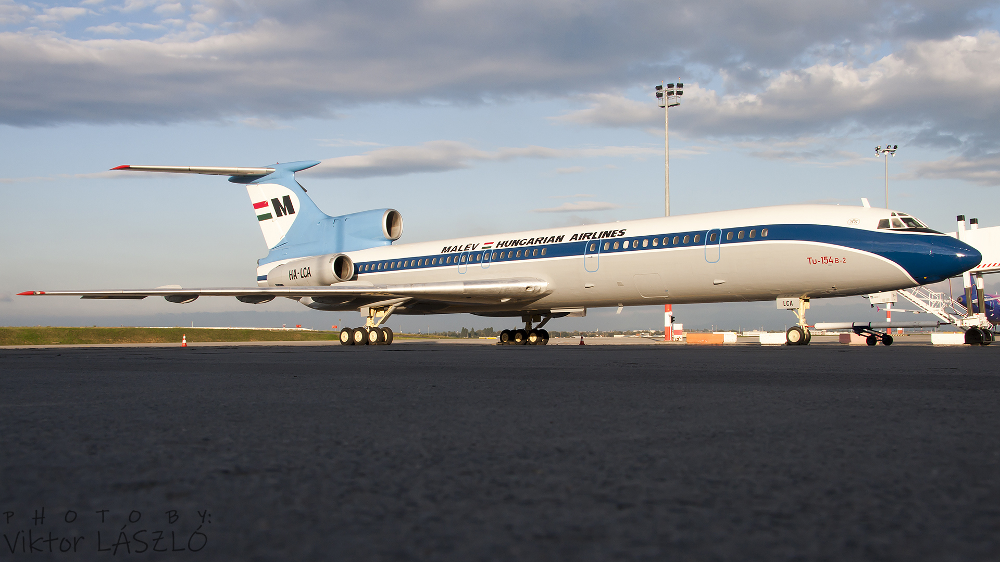
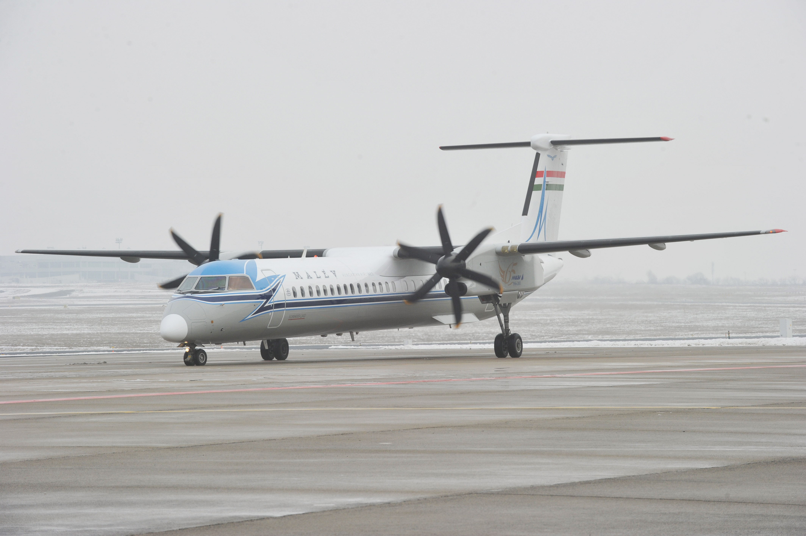
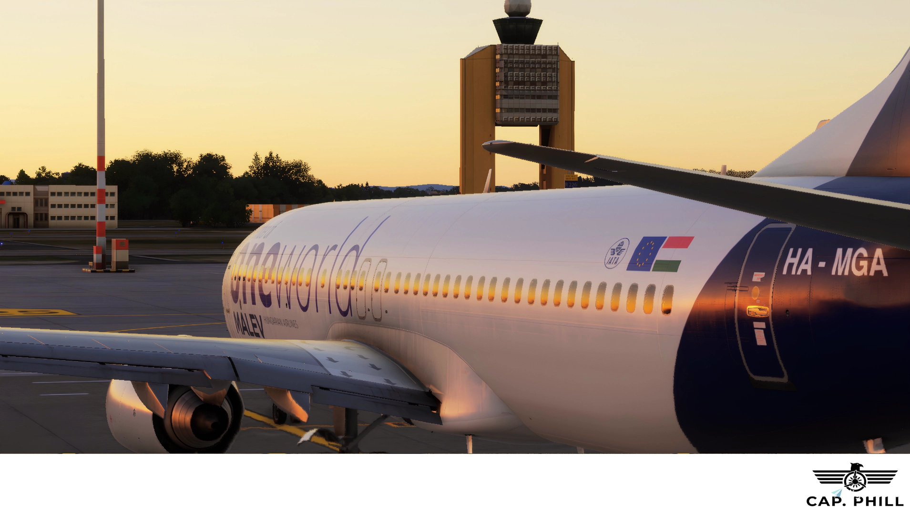
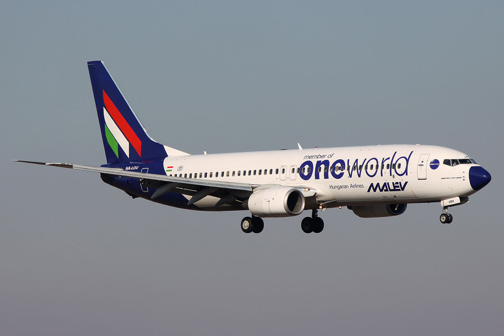
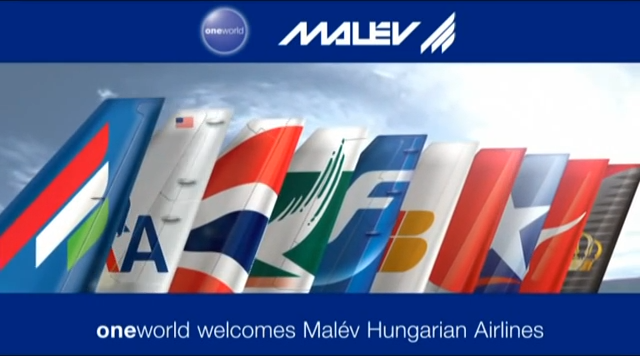

Malév Zrt. cégismertető
A Malév Zrt. több mint nyolcvanéves múltra tekint vissza, 2026. március 29-én ünnepelte fennállásának 80. évfordulóját. Napjainkban a közép-kelet-európai térség egyik vezető, menetrendszerű utasszállítással, árufuvarozással és charterüzemeléssel foglalkozó légitársaságaként tartják számon.
A Malév 33 országban képviselteti magát képviseletek és vezérügynökök útján. A légitársaság járatain 2010-ben több mint 3 millió fizető utas repült.
Szakmai elismerések
A Malév gépei a legcsendesebbekA prágai repülőtér által szervezett felmérésből kiderült, hogy a Malév gépei a legcsendesebbek a turbólégcsavaros kategóriában megelőzve neves német és osztrák légitársaságokat, melyek a második és harmadik helyezést kapták. A Malév így ’The Quietest Airline 2010’ (A legcsendesebb légitársaság 2010) díjat kapta a felmérést végző prágai légikikötő és a cseh főváros repülőtéri 6. kerületi vezetőitől. A szervezők abból a célból hirdették meg a versenyt immáron negyedik alkalommal, hogy pozitív példával ösztönözzék a légitársaságokat a környezetkímélő eljárások és technológiák alkalmazására.
Malév 2010-ben Kelet-Európa Legjobb LégitársaságaLégitársaságunkat Kelet-Európa legjobb légitársaságává választották egy, az utasok véleményén alapuló független felmérés eredményeként.

A World Airline Awards-t 1999-ben alapították, mely az évenkénti Világ Légitársaságai Felmérés eredményein alapul. A 2009/2010-es esztendőben a felmérésben az egész világból, több mint 200 légitársaság, a legnagyobb nemzetközi es belföldi légiszállítók vettek részt. A 2010-es hamburgi World Airline Award díjátadón Martin Gauss vezérigazgató vette át a Skytrax, Kelet-Európa Legjobb Légitársasága 2010 díjat.
A Malév győzelme kapcsán Mr. Edward Plaistes, a Skytrax elnöke elmondta:
"Fantasztikus teljesítmény
ez a Malévtól, hiszen teljes mértékben megfeleltek, sőt túlteljesítették utasaik elvárásait, amely a
Legjobb Kelet-Európai Légitársaság nevet hozta meg számukra. A döntés aláhúzza azt a tényt, hogy a Malév
sikerességét annak köszönheti, hogy a legnehezebb körülmények között is ki tudta vívni utasai
elégedettségét."
A Reader's Digest magazin European Trusted Brands (ETB) felmérése szerint az olvasók véleménye alapján a Malév a legmegbízhatóbb márka környezetvédelmi szempontból.
A Reader's Digest magazin European Trusted Brands (ETB) 2001-ben indította felmérését, mely a legnagyobb és legátfogóbb fogyasztói tanulmányok egyike Európában. Idén a vizsgálat 16 európai országra terjedt ki (Ausztria, Belgium, Csehország, Finnország, Franciaország, Hollandia, Lengyelország, Magyarország, Nagy-Britannia, Németország, Oroszország, Portugália, Románia, Spanyolország, Svájc, Svédország) és elsődleges célja az volt, hogy kiderítse, mely márkákban bíznak leginkább az európai fogyasztók.
A reprezentatív felmérés az idei évben első alkalommal vizsgálta meg, hogy az emberek mennyire tartják megbízhatónak a különböző márkákat környezetvédelmi szempontból.
A kérdőívek kitöltőit arra kérték, hogy az adott termék/szolgáltatás kategóriák mindegyikénél nevezzenek meg egy-egy márkát, amelyről úgy gondolják, környezetvédelmi kérdésekben a legjobb hírnévnek örvendenek.
A magyarországi felmérés eredményeként a Malév lett a "Megbízható Márka a Környezetért 2009" díj nyertese.
„Év légitársasága" - 2004, 2005, 2006, 2007Idegenforgalmi szakemberek, gyakran utazó üzletemberek, vállalatvezetők és az utasok szavazatai alapján a Malév kapta a 2007-es 'Év légitársasága' díjat! A megtisztelő elismerést „Az Utazó" magazin közvélemény-kutatása alapján ítélték oda a nemzeti légitársaságnak, akárcsak a 2004-es és 2005-ös és 2006-os években.
IOSA regisztrált légitársaságA Malév 2006. július 3-án felkerült a IATA IOSA regisztrált légitársaságok listájára (www.iata.org/registry), miután sikeresen megfelelt a nemzetközi légiközlekedési iparág legmeghatározóbb üzemeltetés-biztonsági auditján. Ezzel a Malév a IATA által elismerten és igazoltan biztonságos és minőségi szolgáltatásokat nyújtó légitársaságok körébe tartozik.
A Malév 2008 áprilisában, a 2006-osnál is átfogóbb IOSA auditon kitűnően megfelelt. Így a IATA újabb két évre megújította a légitársaság IOSA regisztrációját.
A legpontosabb európai légitársaságA Malév gépei érkeztek a legpontosabban célállomásaikra a rövid és középtávon közlekedő járatok tekintetében az Európai Légitársaságok Szövetségének (Association of European Airlines, AEA) 2008 első negyedévi jelentése szerint. A európai légitársaságok forgalmi és poggyászkezelési mutatóit összegző riportból az is kiderül, hogy a rövid és középtávon közlekedő járatok indulását tekintve a Malév a harmadik legpontosabb volt az öreg kontinensen, míg a poggyászkezelésében az ötödik leggondosabbként szerepelt.
Történet
A magyar légiközlekedés története a második világháború végéigA magyar polgári repülés több mint egy évszázados múltra tekint vissza.
Még egy év sem telt el Louis Blériot magyarországi bemutatórepülése óta, amikor 1910. június 25-én megalakult az első, repüléssel foglalkozó magyar vállalkozás, az Aero Részvénytársaság. Az 1912-ig működő cég többek között pilótaiskolát is létrehozott, melybe Franciaországból szerződtették a hajózó és műszaki személyzetet.
1918. július 4-én az Osztrák-Magyar Monarchia katonai futárgépei a világon az elsők között szállítottak repülőgéppel légipostát Budapest és Bécs között. A küldemények egy részére már légipostabélyegeket ragasztottak, melyek megmaradt példányait ma világszerte nagy becsben tartják a gyűjtők.
Az 1920-ban létrejött MAEFORT, a Magyar Légiforgalmi Rt. az első világháborúból megmaradt hadigépekkel, katonai személyzettel végzett Magyarországon rendszeres posta- és áruszállítást, s 1921 végén alkalmanként már utasokat is szállított.
.jpg)
1922-ben két légiforgalmi vállalkozás alakult meg Magyarországon, amelyek a következő évben kezdték meg működésüket. Az Aeroexpress Rt. ötszemélyes, Junkers F-13-as gépeivel rendszeres légi járatokat közlekedtetett Budapest és Bécs között. Az úszótalpakkal felszerelt gépek a Duna vizét használták repülőtérnek. A cég 1926-ban gyakorlatilag beszüntette tevékenységét. A másik, újonnan alakult légitársaság már életképesebbnek bizonyult. A Magyar Légiforgalmi Rt. ötszemélyes, Fokker F-III-as gépeivel ugyancsak a Budapest-Bécs útvonalon kezdte meg a menetrend szerinti utas-, áru- és postaszállítást.
1928-ban az ML Rt. gépei már mintegy 850 ezer kilométer távolságot repültek, s csaknem 10 ezer utast, illetve 1 millió kilogramm hasznos terhet szállítottak. Ebben az évben szervezték újjá a társaságot, mely Malert néven folytatta az előd tevékenységét.
A harmincas években a Malert megkezdte és fokozatosan kiterjesztette belföldi járatait, a külföldi államokkal kötött légügyi egyezmények pedig lehetővé tették, hogy Ju-52-es és SM-75-ös gépei közelebb hozzák Budapesthez Európa nagyvárosait.
A Malert működésének a második világháború vetett véget. Légiflottáját és alkalmazottait hadi szolgálatba állították, ami azt eredményezte, hogy 1944 végére teljesen megsemmisült a társaság gépállománya, magyarországi repülőterei pedig romokban hevertek. A háború után tehát szinte a semmiből kellett újjászervezni a magyar légi közlekedést.
Malév története1946. március 29-én jött létre a Malév jogelődje, a Maszovlet, a Magyar-Szovjet Polgári Légiforgalmi Részvénytársaság. A légitársaság flottája öt, 21 személyes Li-2-es utasszállítóból és öt, háromüléses Po-2-es taxigépből állt. A Maszovlet 1946. október 15-étől folyamatosan indította el a belföldi járatokat a főbb magyar városokba. Az első külföldi járat 1947-ben indult útjára Prágába.
Fontos változást hozott a Maszovlet életében a Ferihegyi repülőtér 1950. május 7-i megnyitása. Ebben az időben a mind a Ferihegyi Repülőtér és a magyar légiirányítás a Maszovlet kezelésébe tartozott.
1954. november 26-án kezdhette meg önálló tevékenységét - a Maszovlet jogutódaként - a Malév, a Magyar Légiközlekedési Vállalat. A Malév ekkor már 18 bel és külföldi vonalon repült a tulajdonában lévő 15 repülőgéppel. Az átalakulás évében összesen 103 356 utast szállított.
A megalakulást követően megindult a géppark korszerűsítése. A Li-2-es gépeket felváltotta a már kétszerte nagyobb kapacitással és sebességgel rendelkező IL-14-es. A típus 1957-69 között volt a magyar légitársaságnál üzemben.
A vállalat első menetrendszerű nyugati járata 1956. június 5-én indult Bécsbe.

A szükséges államközi légügyi egyezmények megkötését követően megkezdődött a Malév menetrend szerinti, európai útvonalhálózatának kiépítése. 1961-ig beindult a Malév belgrádi, koppenhágai, tiranai, amszterdami, brüsszeli, moszkvai, stockholmi, zürichi, frankfurti, párizsi és római járata. A Malév és Ferihegy alig néhány esztendő alatt felzárkózott Európához.
1960-ban a Malév az akkori szocialista országok közül elsőként állította forgalomba az Il-18-as, légcsavaros-gázturbinás 105 személyes repülőgépet, mely a hatvanas évek meghatározó típusa volt. 1960-tól 1967-ig a Malév összesen nyolc ilyen típust vásárolt a Szovjetuniótól. Gyakorlatilag e gép adottságaira építve fejlődhetett tovább a hatvanas években a Malév útvonalhálózata, s nyílhattak meg az első járatok a Közel-Keletre és Észak-Afrikába. 1969-ben már 28 ország 33 városába indultak Ferihegyről Malév-gépek.
A Malév 1969-ben szüntette meg a magyarországi belföldi légi forgalmat.
Az első 68 személyes Tupoljev Tu-134-es sugárhajtású utasszállító 1969 nyarán került menetrend szerinti forgalomba. A karcsú, kecses típusú gépek egészen 1999-ig teljesítettek szolgálatot a vállalatnál.

A flotta további modernizációjaként az Il-18-asok felváltására, a Malév 143 személyes Tu-154-es gépeket vásárolt, melyek az 1974-es nyári menetrendi időszaktól álltak forgalomba. Ez az új típus tette lehetővé, hogy a Malév az utasforgalomból fokozatosan kivont Il-18-asokat, átalakítás után a továbbiakban csak áruszállításra használja.
A folyamatos fejlődés fontos mérföldkőhöz ért 1984-ben, amikor a társaság teljes jogú tagja lett az IATA-nak (Légitársaságok Nemzetközi Szövetsége).
Az 1980-as évek végére a társaság évente már rendszeresen több mint egymillió utast szállított, és 30 ország 40 városába indított járatokat. Az éves árbevétel szempontjából a társaság az ország első tíz vállalata közé tartozott.
Az évtized végére a Malév megkezdte a géppark modernizációjának újabb szakaszát. Kelet-Európán a Malév elsőként kapta meg a szükséges kormányzati jóváhagyását a nyugati légi járművek bérletéhez. Ettől fogva repülnek a vállalatnál amerikai gyártmányú Boeing-737-es típusú repülőgépek.
A típusváltás mellett a géppark külső megjelenése is megváltozott és az egyre korszerűsödő flotta a ma látható szín, és formavilágot kapta.
1992. július végén elkezdődött a Boeing-767-es típussal a rendszeres hosszú távú charter járatok repülése, amit 1993 májusától a menetrend szerinti forgalom beindítása követett az észak-amerikai kontinensre.A 90-es évek fontos változása volt a magyar nemzeti légitársaság szervezeti átalakítása. 1992 nyarától részvénytársasági formában működött a Malév.
1996 és 2006 között számos előremutató esemény történt a Malév életében; megújult a flotta, számos új járat nyílt, s ezzel egy új útvonalhálózat jött létre.
A Malév 1996-tól hat darab új 67 személyes Fokker 70-es és 2002-től pedig négy 50, illetve 48 személyes, az üzletemberek igényeit kiszolgáló Bombardier CRJ 200-as repülőgépekkel bővítette flottáját.
2003 januárjától pedig elindult a régebbi Boeingek cseréje is az úgynevezett Next Generation Boeing-737-600-as, 700-as és a 180 férőhelyes 800-as repülőgépekre.
A Malév az utóbbi évek során az egyre erősödő piaci versenyben megőrizte piaci pozícióját, évről évre növelni tudta utasainak számát. 2007-ben már több mint 3 millió menetrend szerinti utast szállított. A légitársaság számos hazai és nemzetközi elismerésben részesült, szolgáltatási színvonalát, pontosságát, gondosságát tekintve az európai légitársaságok élvonalába tartozik.
A Malév magánosítására 2007 első felében került sor, aminek keretében a magyar nemzeti légitársaság részvényeinek 99,95%-át a Magyarországon alapított és bejegyzett Airbrige Zrt. vásárolta meg a magyar államtól.
A Malév 2007. április 1-jén a oneworld légitársasági szövetég teljes jogú tagjává vált. A Malév utasai számára a csatlakozással kitárult a világ, hiszen a oneworld szövetség járataival a földkerekség mintegy 150 országának 700 célállomására juthatnak el a szövetséghez tartozó közel 2500 repülőgép fedélzetén.
A Malév folyamatosan fejleszti online szolgáltatásainak körét. Ennek a folyamatnak eredményeként 2008-tól már minden járatára biztosítja az elektronikus-jegy szolgáltatást, valamint bevezette az online check-in és az online jegymódosítás szolgáltatásokat is. Honlapja mind szerkezetét, mind pedig arculatát tekintve megfelel a legújabb követelményeknek.
A légitársaság 2007-től számos jelentős költségcsökkentő lépést hajtott végre. Ennek részeként 2008-ban bezárta a veszteséget termelő hosszú távú járatait, flottáját pedig fokozatosan átalakította, egységesítette. A flotta gerincének számító új generációs B737NG repülőgépek mellé költséghatékony Q400-as típusú turbópropelleres gépeket állított forgalomba regionális járatain.

A légitársaság új kereskedelmi stratégiája az európai és közel-keleti piacokra fókuszál, a megváltozott piaci környezethez igazodó dinamikus és előnyös feltételekkel, sokoldalúbb utazási terméket kínálva az utasoknak.
A Malév 2010 elején visszakerült a Magyar Állam tulajdonába. Az újabb tulajdonos-váltás a Malév tőkéjének leszállításával, és tőkeemeléssel ment végbe. A magyar légitársaság egyik legnagyobb hitelezője az orosz Vnyesekonombank maradt, amely így korábbi tulajdonosi szerepvállalását alapvetően hitelezőire változtatta.
Malév a oneworld szövetségben
A Malév 2007. április 1-jétől tagja a a oneworld légitársasági szövetségnek. A Malév teljes jogú tagként nyújtja utasai számára a szövetség összes szolgáltatását és előnyét. A Malév utasai a taglégitársaságok járatain a világ 150 országának közel 700 célállomására juthatnak el.
A szövetség a taglégitársaságok számára lehetővé teszi, hogy utasaiknak szélesebb körű szolgáltatásokat és nagyobb előnyöket nyújtsanak, mint amelyet bármely légitársaság önállóan nyújtani képes. Mindez egy kiterjedtebb útvonalhálózatot, több repülőtéri váró használatát és törzsutas Bónusz-, illetve Club-pontok gyűjtését és felhasználását jelenti a oneworld összehangolt útvonalhálózatán. A Malév Duna Club törzsutasprogramjának tagjai az összes oneworld taglégitársaság járatain gyűjthetik és felhasználhatják törzsutaspontjaikat, a kiemelt törzsutaskártya birtokosai pedig használhatják a szövetség légitársaságainak mintegy 550 repülőtéri váróját szerte a világon.


